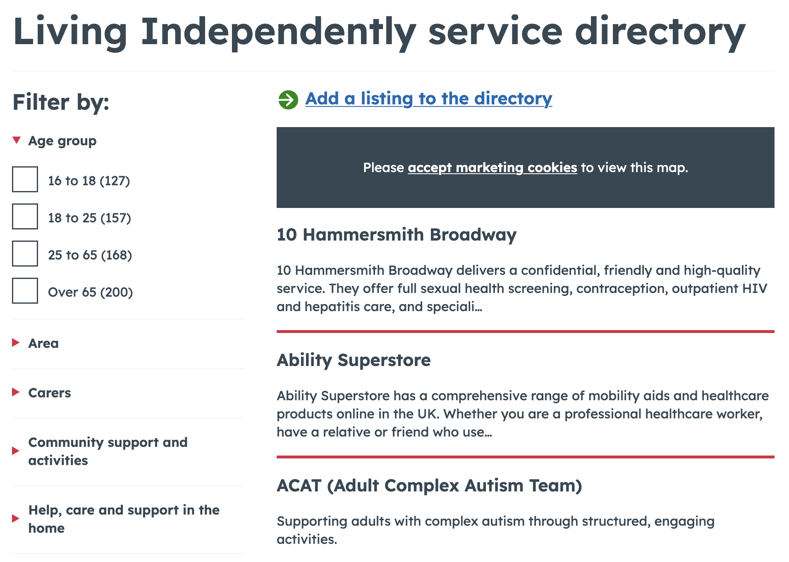
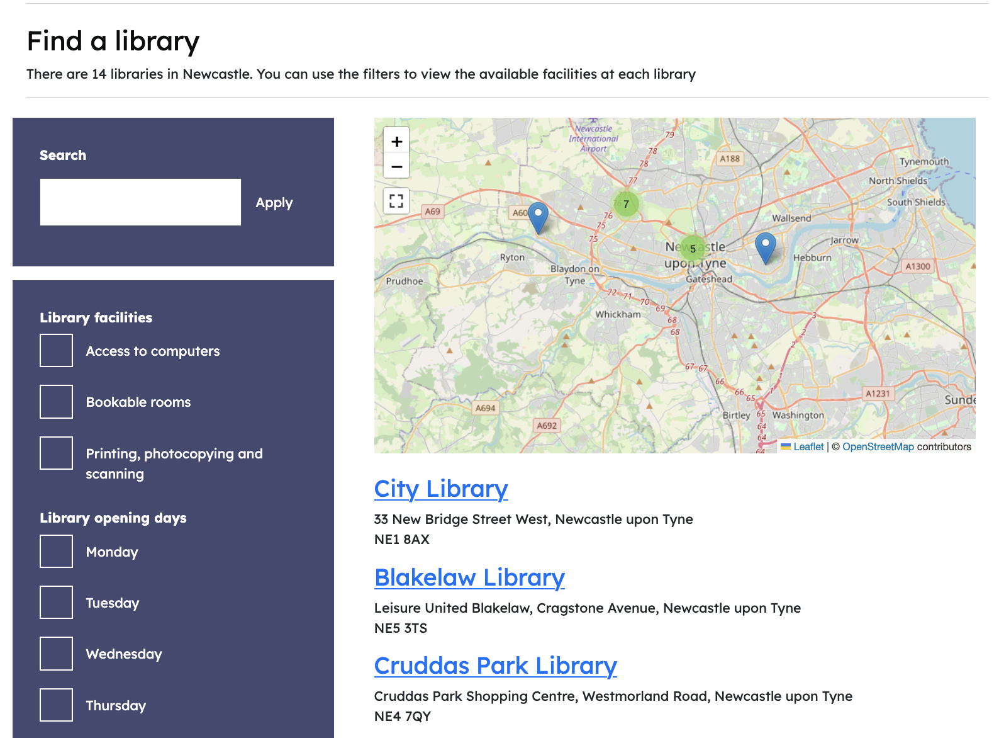
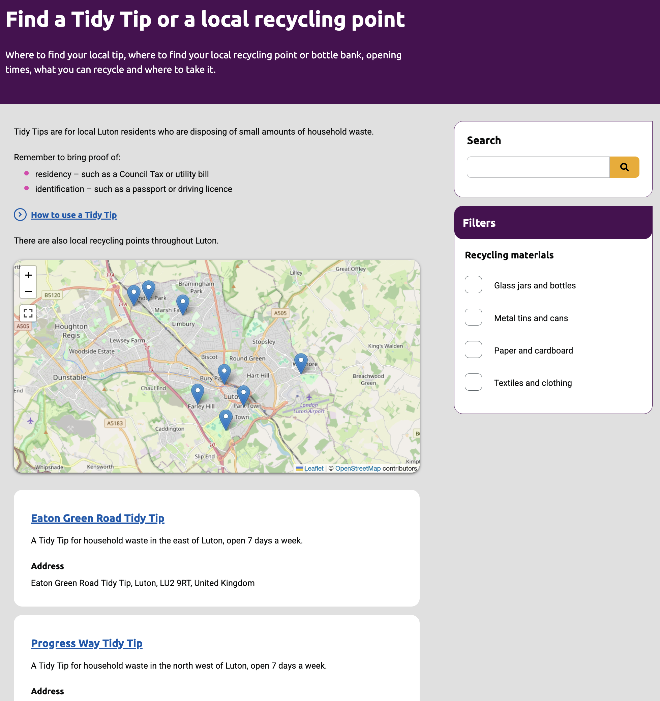
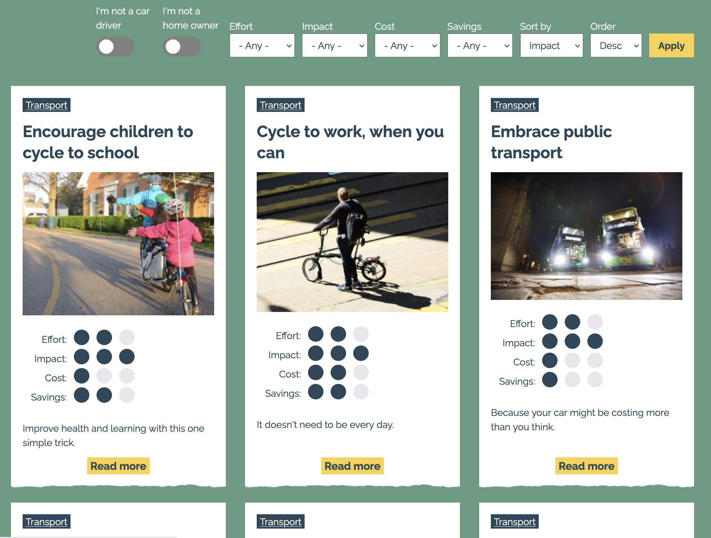
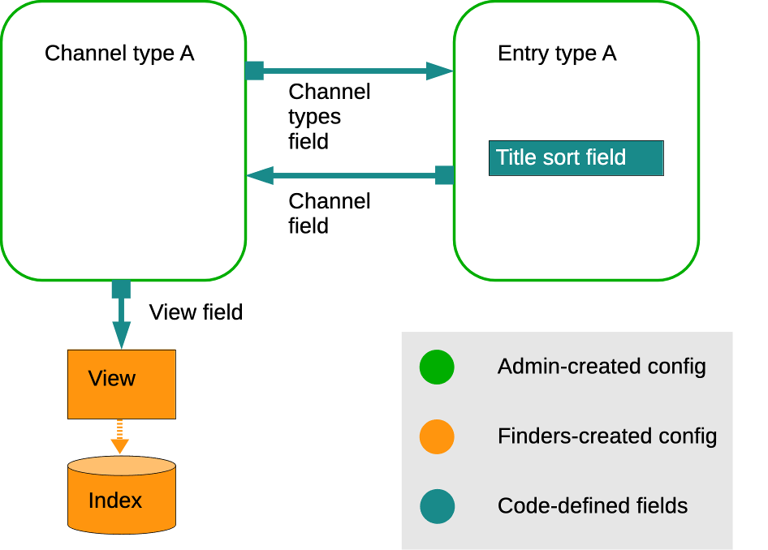
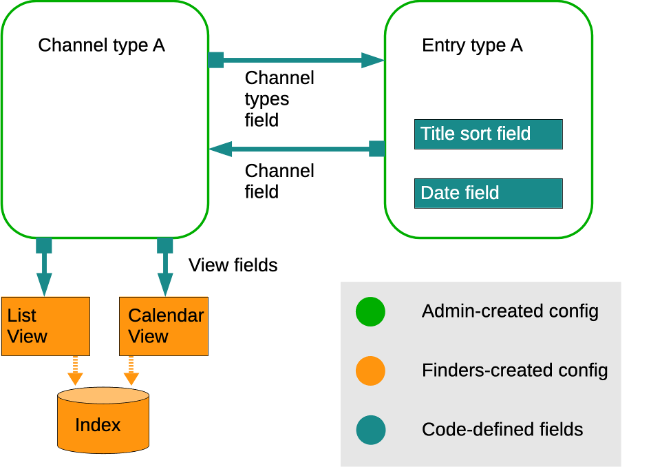
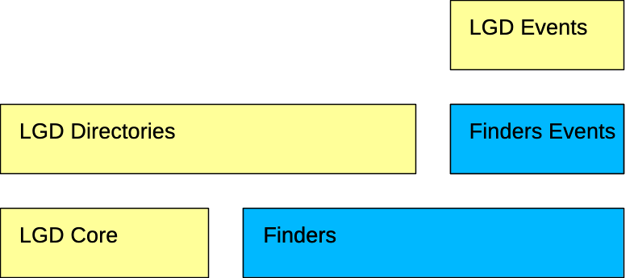

## LGD Dev Days 2026 ### Finders: LGD Directories everywhere Joachim Noreiko * Drupal.org: https://www.drupal.org/u/joachim * Mastodon: https://drupal.community/@joachim --- ### Joachim Noreiko Freelance Drupal developer * Drupal.org: https://www.drupal.org/u/joachim * Mastodon: https://drupal.community/@joachim --- LGD Directories: - Present content as a list which can be searched and filtered by users. - Content editors can build lists as well as list items, without config. --- Hammersmith & Fulham: Service directory https://www.lbhf.gov.uk/living-independently/living-independently-service-directory  --- Newcastle: Libraries https://new.newcastle.gov.uk/libraries/find-library  --- Woking: car parks https://www.woking.gov.uk/parking-streets-travel/parking/car-parks/find-car-park <img src="assets/website-woking-carparks.png" class="r-stretch"> --- Luton: recycling centres https://beta.luton.gov.uk/bins-waste-recycling/reducing-recycling-waste/tidy-tips-local-recycling-points/find-tidy-tip-or-local-recycling-point  --- Climate action Oxfordshire https://climateactionoxfordshire.org.uk/  --- Two node types work together as a system: - Directory channel: listing page with faceted search - Directory pages: listing items  --- Directories allows expanding this pattern: - Extra channel node types - Extra entry node types  --- Finders makes this pattern repeatable.  --- Finders allows specialisation.  --- Config entity + plugin - Config entity: - Plugin configuration - Which bundles are involved - Plugin: customisable behaviour --- Creating a Finder entity creates: - Bundle fields: - Channel reference field - Channel item types - Title sort - View field - Search index - View of search index items --- Creating a basic Finder entity creates:  --- ### Extensions: events Finders Events contrib module Events Finder type plugin: * Recurring date field * Two views shown in channels (optionally) * list * calendar --- Creating an Events Finder entity creates: - Bundle fields: - Channel reference field - Channel item types - Title sort - View field x 2 - Date recur field - Search index - View of search index items - Calendar view of search index items --- Creating an Events Finder entity creates:  --- ### Extensions: facets Finders Facets module, included in Finders When a Finder is created, creates: * A facet for each view the Finder is creating * A block for each facet --- Create event channel <img src="assets/screenshot-create-event-channel.png" class="r-stretch"> --- Create event item <img src="assets/screenshot-create-event.png" class="r-stretch"> --- Event channel - facets and list view <img src="assets/screenshot-event-channel.png" class="r-stretch"> --- Event channel - calendar view <img src="assets/screenshot-event-channel-calendar.png" class="r-stretch"> --- ## What next? - Getting Finders to 1.0 release. - LGD Directories 4.0, powered by Finders. - Finder types for blogs, news, and more. Note: A hammer with lots of nails! --- ## Dependency structure  --- ### Drupal.org projects Developed for Finders: * Finders: [finders](https://www.drupal.org/project/finders) * Finders Events: [finders_events](https://www.drupal.org/project/finders_events) * Recurring Dates Field Search API: [date_recur_search_api](https://www.drupal.org/project/date_recur_search_api) --- ### Drupal.org projects Dependencies - Finders: - Search API: [search_api](https://www.drupal.org/project/search_api) - Views Reference Field: [viewsreference](https://www.drupal.org/project/viewsreference) - Finders Events - Date Recur: [date_recur](https://www.drupal.org/project/date_recur) - Recurring Date Field Modular Widgets: [date_recur_modular](https://www.drupal.org/project/date_recur_modular) - Calendar View: [calendar_view](https://www.drupal.org/project/calendar_view) --- Thank you! * * <img src="assets/lgd-logo.svg" height="40px" style="display: inline; margin: auto;"> * <img src="assets/ECC_logo_long_red.svg" height="40px" style="display: inline; margin: auto;"> * --- Special thanks to ekes --- Hire me! ‘Joachim gets shit done. The difficult shit. And he gets it done properly. A+++ 5 stars’ – Justine at Chicken * Drupal.org: https://www.drupal.org/u/joachim * Mastodon: https://drupal.community/@joachim